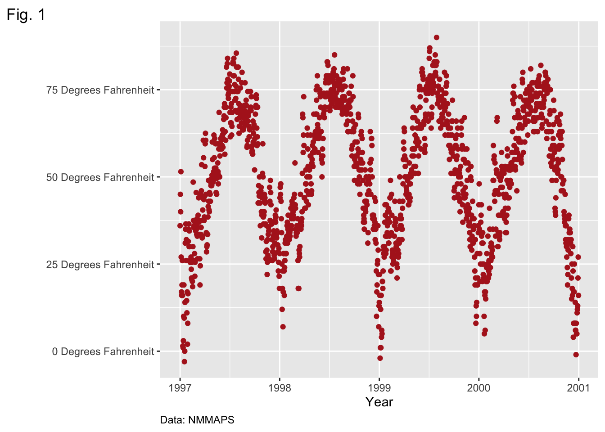
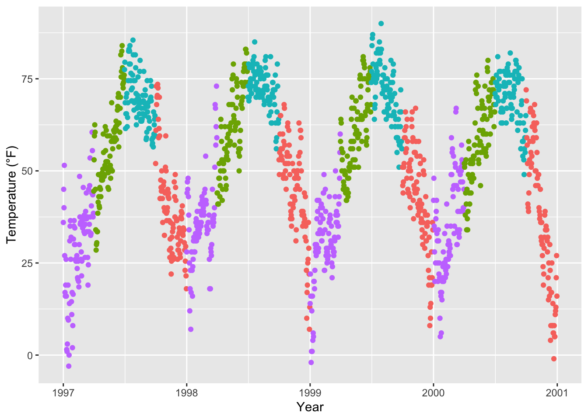
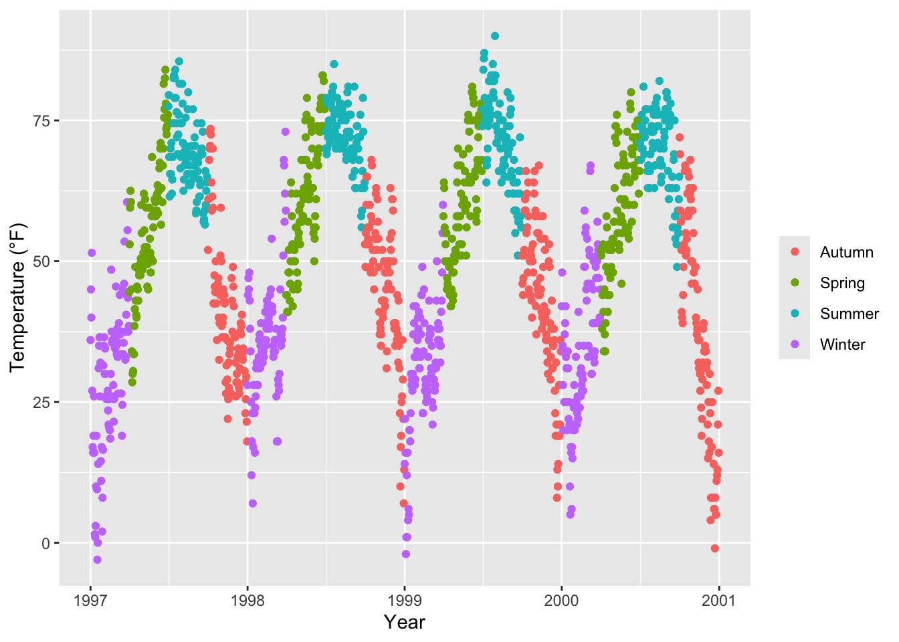
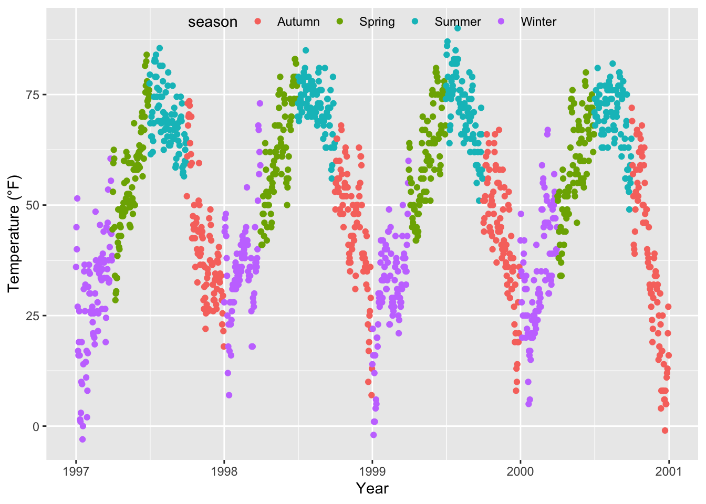
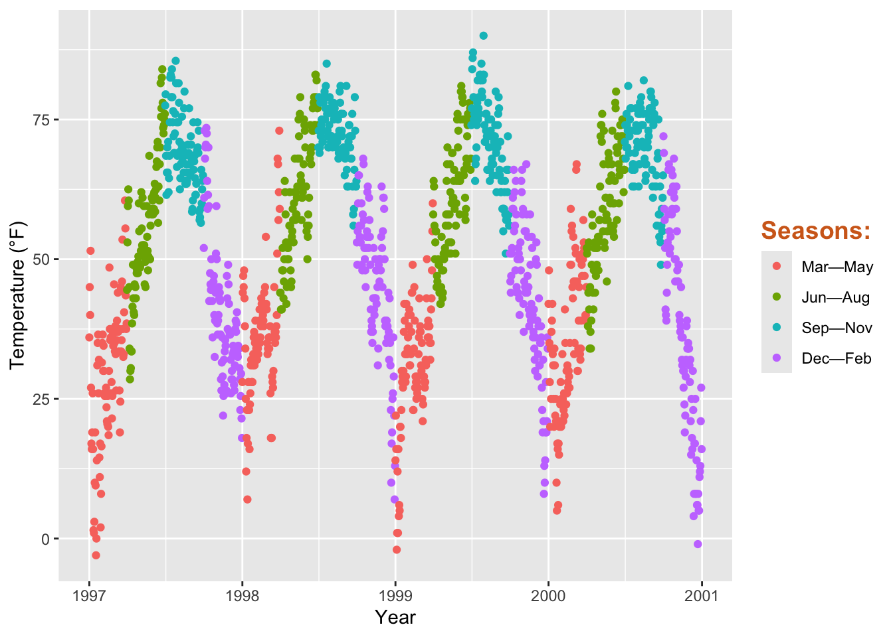

library(ggplot2)
library(RColorBrewer)
library(extrafont)
library(cowplot)
library(gridExtra)ggplot Tutorial
Building Blocks for ggplot
Data: The raw data that you want to plot.
Geometries geom_: The geometric shapes that will represent the data.
Aesthetics aes(): Aesthetics of the geometric and statistical objects, such as position, color, size, shape, and transparency
Scales scale_: Maps between the data and the aesthetic dimensions, such as data range to plot width or factor values to colors.
Statistical transformations stat_: Statistical summaries of the data, such as quantiles, fitted curves, and sums.
Coordinate system coord_: The transformation used for mapping data coordinates into the plane of the data rectangle.
Facets facet_: The arrangement of the data into a grid of plots. Visual themes theme(): The overall visual defaults of a plot, such as background, grids, axes, default typeface, sizes and colors.
#creating only the panel
(g <- ggplot(data = chic,
aes(x = date, y = temp)))+
geom_point(color = "firebrick")
#putting object in parentheses so it runs immediatelyWhy does only a panel show up?
List of geoms here
(g <- ggplot(data = chic,
aes(x = date, y = temp))+
geom_point()+ #adds point layer to plot
geom_line())#adds line layer
Changing Properties of Geometries
#colors() List of available base R colors
(g <- ggplot(data = chic,
aes(x = date, y = temp))+
geom_point(color = "firebrick", shape = "diamond", size = 2)) #adds point layer to plot
Themes
Creating your own theme
faiths_theme <- function() {
theme(
# 1) Add border with a purple dashed line
panel.border = element_rect(colour = "black", fill = NA, linetype = 1),
# 2) Set background color to aliceblue
panel.background = element_rect(fill = "white"),
# 3) Modify grid lines: major grid lines in thistle color, dashed
panel.grid.major.x = element_line(colour = "grey", linetype = 3, size = 0.5),
panel.grid.major.y = element_line(colour = "grey", linetype = 3, size = 0.5),
# Remove minor grid lines
panel.grid.minor.x = element_blank(),
panel.grid.minor.y = element_blank(),
# 4) Customize axis text: italic and thistle-colored
axis.text = element_text(colour = "black", face = "italic", family = "Times New Roman"),
# 5) Customize axis titles: thistle color
axis.title = element_text(colour = "black", family = "Times New Roman"),
# Customize axis ticks: thistle color
axis.ticks = element_line(colour = "black"),
# 6) Place legend on the right side
legend.position = "right"
)
}
g + geom_point(alpha = 0.2)+ faiths_theme()Adjusting Axes
(g <- ggplot(data = chic,
aes(x = date, y = temp))+
geom_point(color = "firebrick", shape = "diamond", size = 2)+
labs(x = "Year", y = "Temperature (°F)")+
theme(axis.title.x = element_text(vjust = 0, size = 15),#using vjust for adjusting vertical allignment (normally 0-1) to move axis horizontally
axis.title.y = element_text(vjust = 2, size = 15)))Adjusting Margins
#margin(t, r, b, l)
#A good way to remember the order of the margin sides is “t-r-ou-b-l-e”.
ggplot(chic, aes(x = date, y = temp)) +
geom_point(color = "firebrick") +
labs(x = "Year", y = "Temperature (°F)") +
theme(axis.title.x = element_text(margin = margin(t = 10), size = 15),
axis.title.y = element_text(margin = margin(r = 10), size = 15))
Changing Axis Titles
ggplot(chic, aes(x = date, y = temp)) +
geom_point(color = "firebrick") +
labs(x = "Year", y = "Temperature (°F)") +
theme(axis.title = element_text(color = "deepskyblue",size = 15, face = "bold"),
axis.text = element_text(color = "forestgreen", size = 12),
axis.text.x = element_text(angle = 50, vjust = 1, hjust = 1, size = 12, face = "italic"))#specifying angle 
Removing Axis Tick Lines
ggplot(chic, aes(x = date, y = temp)) +
geom_point(color = "firebrick") +
labs(x = "Year", y = "Temperature (°F)") +
theme(axis.ticks.y = element_blank(),
axis.ticks.x = element_blank())#element_blank removes the element
Limiting Axis Range
ggplot(chic, aes(x = date, y = temp)) +
geom_point(color = "firebrick") +
labs(x = "Year", y = "Temperature (°F)") +
ylim(c(0, 50))
Alternatively you can use scale_y_continuous(limits = c(0,50)) or coord_cartesian(ylim = c(0, 50)). However, scale_y/ylim subsets the data first and coord zooms in. Coord may give incorrect outcome if you want to see the subset of the data at specified y coordinates
chic_high <- dplyr::filter(chic, temp > 25, o3 > 20)
ggplot(chic_high, aes(x = temp, y = o3)) +
geom_point(color = "darkcyan") +
labs(x = "Temperature higher than 25°F",
y = "Ozone higher than 20 ppb") +
expand_limits(x = 0, y = 0)
#using coord_cartesian(xlim = c(0, NA), ylim = c(0, NA)) will lead to same results
ggplot(chic_high, aes(x = temp, y = o3)) +
geom_point(color = "darkcyan") +
labs(x = "Temperature higher than 25°F",
y = "Ozone higher than 20 ppb") +
expand_limits(x = 0, y = 0) +
coord_cartesian(expand = FALSE, clip = "off") #using clip = "off" to draw outside of plot areaMaking Axis Longer
ggplot(chic, aes(x = temp, y = temp + rnorm(nrow(chic), sd = 20))) +
geom_point(color = "sienna") +
labs(x = "Temperature (°F)", y = "Temperature (°F) + random noise") +
xlim(c(0, 100)) + ylim(c(0, 150)) +
coord_fixed(ratio = 1/5)#ratios higher than 1 make y longer, and vice versa
Using functions to alter labels
ggplot(chic, aes(x = date, y = temp)) +
geom_point(color = "firebrick") +
labs(x = "Year", y = NULL) +
scale_y_continuous(label = function(x) {return(paste(x, "°F"))}) #use funtion to alter all parts of y label
(g <- ggplot(chic, aes(x = date, y = temp)) +
geom_point(color = "firebrick") +
scale_y_continuous(label = function(x) {return(paste(x, "Degrees Fahrenheit"))}) +
labs(x = "Year", y = NULL,
caption = "Data: NMMAPS",
tag = "Fig. 1") +#labeling this figure
theme(plot.title = element_text(size = 14, face = "bold.italic"),
plot.caption = element_text(hjust = 0)))
The function takes the y-values (in this case x), and returns the value concatenated with “°F” (so if x = 32, the label becomes 32°F).
Legends
ggplot(chic,
aes(x = date, y = temp, color = season)) +
geom_point() +
labs(x = "Year", y = "Temperature (°F)")#turning off legend
ggplot(chic,
aes(x = date, y = temp, color = season)) +
geom_point() +
labs(x = "Year", y = "Temperature (°F)") +
theme(legend.position = "none")#turns off legend
#can also use guides(color = "none") or scale_color_discrete(guide = "none")
#removing legend title
ggplot(chic, aes(x = date, y = temp, color = season)) +
geom_point() +
labs(x = "Year", y = "Temperature (°F)") +
theme(legend.title = element_blank())
#changing legend position
ggplot(chic, aes(x = date, y = temp, color = season)) +
geom_point() +
labs(x = "Year", y = "Temperature (°F)") +
theme(legend.position = "top")#placing legend inside of the panel
ggplot(chic, aes(x = date, y = temp, color = season)) +
geom_point() +
labs(x = "Year", y = "Temperature (°F)",
color = NULL) +
theme(legend.position = c(.15, .15),
legend.background = element_rect(fill = "transparent"))
#change legend direction
ggplot(chic, aes(x = date, y = temp, color = season)) +
geom_point() +
labs(x = "Year", y = "Temperature (°F)") +
theme(legend.position = c(.5, .97),
legend.background = element_rect(fill = "transparent")) +
guides(color = guide_legend(direction = "horizontal"))
ggplot(chic, aes(x = date, y = temp, color = season)) +
geom_point() +
labs(x = "Year", y = "Temperature (°F)",
color = "Seasons\nindicated\nby colors:") +
theme(legend.title = element_text(
color = "chocolate",
size = 14, face = "bold"))#changing order of legend keys
chic$season <-
factor(chic$season,
levels = c("Winter", "Spring", "Summer", "Autumn"))
ggplot(chic, aes(x = date, y = temp, color = season)) +
geom_point() +
labs(x = "Year", y = "Temperature (°F)")#changing legend labels
ggplot(chic, aes(x = date, y = temp, color = season)) +
geom_point() +
labs(x = "Year", y = "Temperature (°F)") +
scale_color_discrete(
name = "Seasons:",
labels = c("Mar—May", "Jun—Aug", "Sep—Nov", "Dec—Feb")
) +
theme(legend.title = element_text(
color = "chocolate", size = 14, face = 2
))
#changing size of legend symbols
ggplot(chic, aes(x = date, y = temp, color = season)) +
geom_point() +
labs(x = "Year", y = "Temperature (°F)") +
theme(legend.key = element_rect(fill = NA),
legend.title = element_text(color = "chocolate",
size = 14, face = 2)) +
scale_color_discrete("Seasons:") +
guides(color = guide_legend(override.aes = list(size = 6)))#manually adding legend items
#defualt plot
ggplot(chic, aes(x = date, y = o3)) +
geom_line(color = "gray") +
geom_point(color = "darkorange2") +
labs(x = "Year", y = "Ozone")#forcing a legend by mapping a guide to a variable. Using aes to map not to a variable in the data set, but to a single string (so that we can get just one color for each)
ggplot(chic, aes(x = date, y = o3)) +
geom_line(aes(color = "line")) +
geom_point(aes(color = "points")) +
labs(x = "Year", y = "Ozone") +
scale_color_manual(name = NULL,
guide = "legend",
values = c("points" = "darkorange2",
"line" = "gray")) +
guides(color = guide_legend(override.aes = list(linetype = c(1, 0),
shape = c(NA, 16))))#other legend styles
ggplot(chic,
aes(x = date, y = temp, color = temp)) +
geom_point() +
labs(x = "Year", y = "Temperature (°F)", color = "Temperature (°F)")ggplot(chic, aes(x = date, y = temp)) +
geom_point(color = "#1D8565", size = 2) +
labs(x = "Year", y = "Temperature (°F)") +
theme(panel.background = element_rect(
fill = "#64D2AA", color = "#64D2AA", linewidth = 2)
)
Working with Ribbons
chic$o3run <- as.numeric(stats::filter(chic$o3, rep(1/30, 30), sides = 2))
ggplot(chic, aes(x = date, y = o3run)) +
geom_line(color = "chocolate", lwd = .8) +
labs(x = "Year", y = "Ozone")Filling the area below the curve
ggplot(chic, aes(x = date, y = o3run)) +
geom_ribbon(aes(ymin = 0, ymax = o3run),
fill = "orange", alpha = .4) +
geom_line(color = "chocolate", lwd = .8) +
labs(x = "Year", y = "Ozone")Specifying Formula for Smoothing
ggplot(chic, aes(x = o3, y = temp)) +
geom_point(color = "gray40", alpha = .3) +
geom_smooth(
method = "lm",
formula = y ~ x + I(x^2) + I(x^3) + I(x^4) + I(x^5),#adding a polynomial regression
color = "black",
fill = "firebrick"
) +
labs(x = "Ozone Level", y = "Temperature (°F)")